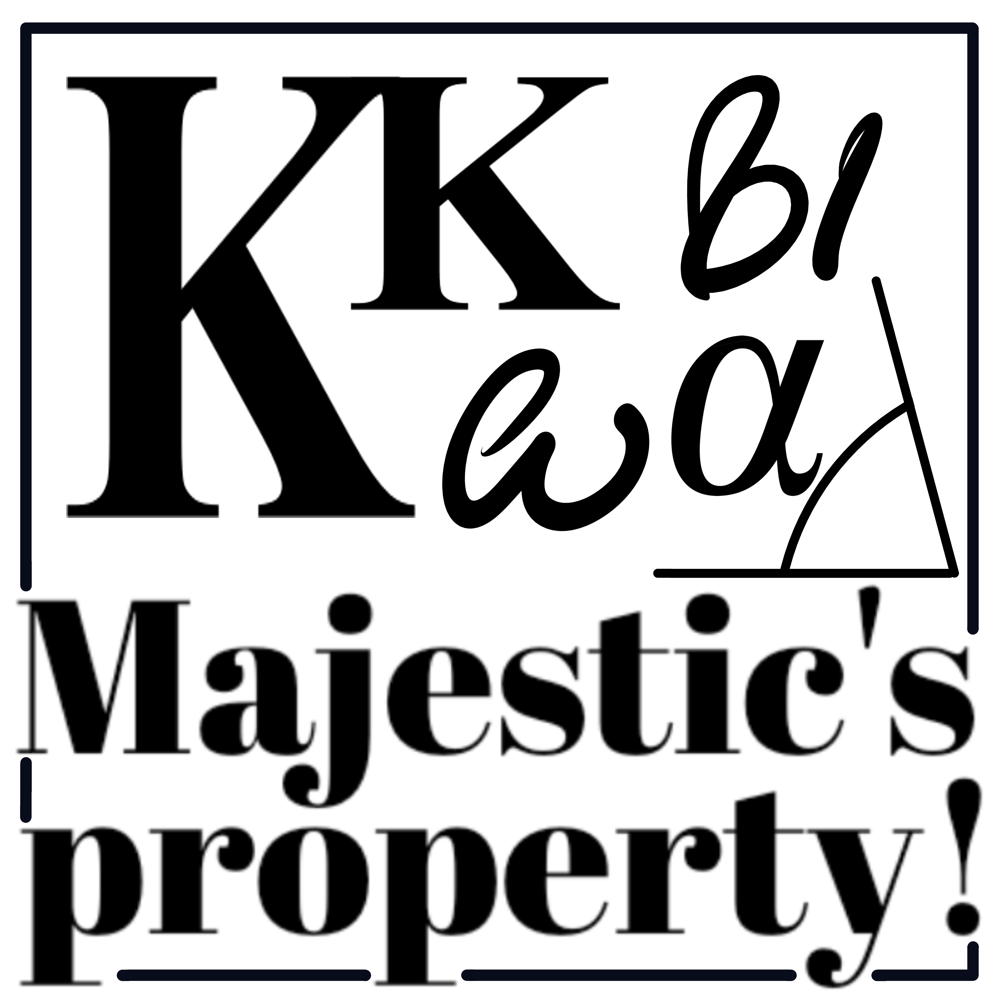
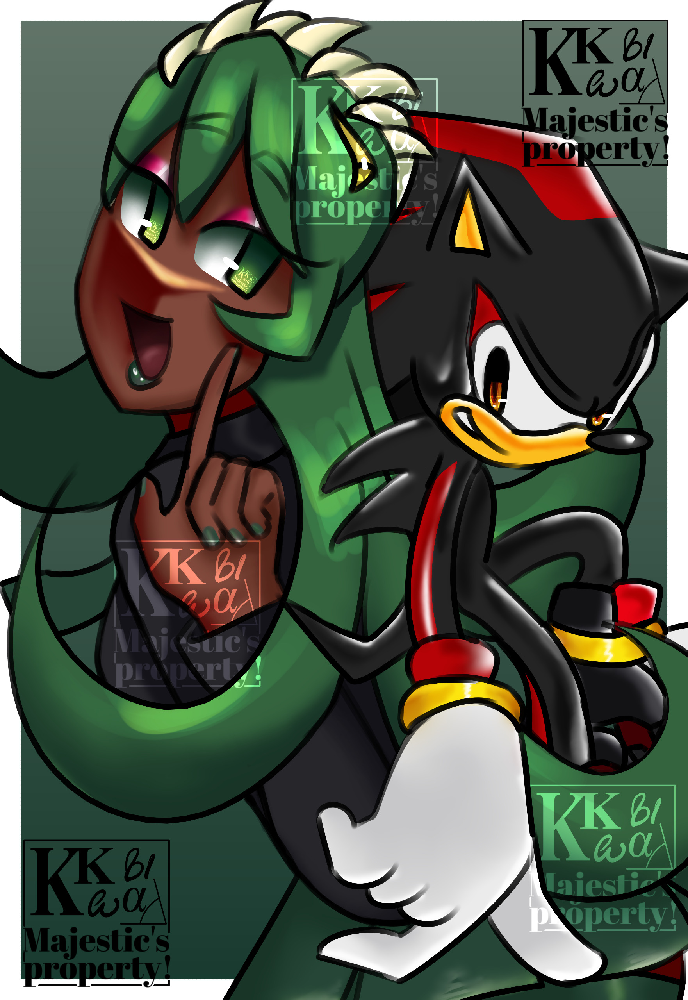

Meus projetos

Formas de expressão: como eu me expresso.

Histórias e a escrita.
Como escrever e criar histórias me inpira.

Minha arte: resultado da minha criatividade.
Este projeto explora meus sentimentos internos e forma de expressão.